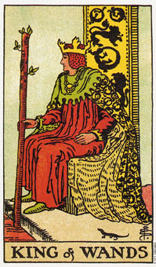

权杖皇后代表透过内在力量而达到成功。
权杖皇后代表火当中的水元素。换句话说，她是以水的方法的到火的教训，水透过感情、情绪及知觉渗透到我们的生活中。
火性的人会积极的找寻目标，而水性的人则是透过欲望、深思熟虑和耐心将机会拉向他们。这种火和水的组合，使皇后先在内心产生愿望，借此将所愿望的东西拉向她。火星的生活态度很明显的表现在她的姿势和坚定的凝视中。
权杖皇后代表一个既坚强又直率的女人。她喜欢自己独立的性格，也会鼓励周遭的人这么做。他乐于行动和组织，而且可能会忽略有时候别人并没有又请求她帮忙。
这张牌上面的向日葵象征她的活力和积极的态度，而黑猫象征她的直觉，可保护她免于伤害。在宝座两侧的狮子代表她内在的力量。在力量牌中可以再度见到狮子，而力量牌和权杖皇后都象征狮子座。另一张在占星术上属同一象征的牌是太阳。
权杖皇后描绘一个二十二岁以上的女人，有着热情和友善的天性，色彩比较偏向蓝或浅褐色的眼珠，以及红棕色的头发。
这个皇后是依她的感觉行事，并运用她内在的力量达成她的目标。她是一个积极而自信的人，有很强的销售能力和充沛的热情。她喜欢行动胜过思考。
大体上的意义
权杖皇后代表透过内在的力量而达到成功。相信你所做的事，以及做你所相信的事，可以帮助你了解你的目标。
这张牌是在描述一个得到多少就会付出多少的女人。如果你令她难过，她会强力的保护她自己，而假如你是不公不义之下的受害者，她也会为了你的利益而战。
两性关系上的意义
在两性关系的分析当中，权杖皇后是描述一个诚实、热心，并且喜欢追寻伴侣的女人。她喜欢接受挑战，而且当事情进行的太平顺时，她会为了追求刺激的缘故，而惹下麻烦。
她喜欢运动和训练体能，也较喜欢一个乐于接受挑战的伴侣。她需要拥有很多属于她个人的自由，而且一旦给与她这样的自由，她将会拥有其他皇后所无法比拟的生气和活力。
权杖皇后，结合了太阳以及(或者)力量牌，形容一种狮子座关系的两难。这包括以两性关系为代价换取事业的成功，或者是用事业为代价换取两性关系的成功。这是一种跷跷板式拉锯局面的安排。重要的是从爱当中发现力量，也就是说，拥有一种亲密的关系，在其中既非你支配别人，也非别人支配你。
倒立的权杖皇后
在两性关系分析当中，权杖皇后的倒立是说她可能看不到自己的力量，并且淹没在恐惧及欲望当中。从另一方面来讲，她可能是跋扈和专权的，四处挑衅，好提醒她自己还活着。
举一个发生在许多年前某个夜晚的例子，当时我和几位朋友外出。那是一家位于安静社区的饭店，正要打烊，警察就站在小路上，以确保饭店的客人安静的离开。我朋友和她女朋友都喝醉了，而且吵得很大声。一名警官要他们把音量降下来，他女朋友的反应是殴打警官。结果他女朋友被拘捕了，并被关了一晚。我朋友卖掉女朋友的马鞍来筹她的保释金，而救灾被释放的一个小时内她让他因窃盗而被捕。这出戏码持续了好几个星期，而且我确信她深爱这期间的每一分钟。
权杖皇后可能常经常会给别人建议，而这些建议其实很适用在她身上，因为她否定内心所压抑的东西，并将它投射到别人身上。她常常在还没有搞清楚状况之前，就纵身该情境中。她也可能会为那些不需要她支援的事挺身而战，亦可能在处理事物的方法上显得笨拙。
倒立的皇后也可能觉得生命已经给她远超过她认为所能克服的，而这可能导致自我怀疑及丧失掉当她正立时所拥有积极、有信心的本性。然后她会假装有自信，变得容易嫉妒别人，当她的朋友成功时，她会一心想与对方竞争。
它也可能在形容一个女人因生病、疲惫或失去方向，及需要支援而使她的火焰消沉。她需要恢复她的力量、勇气及希望。